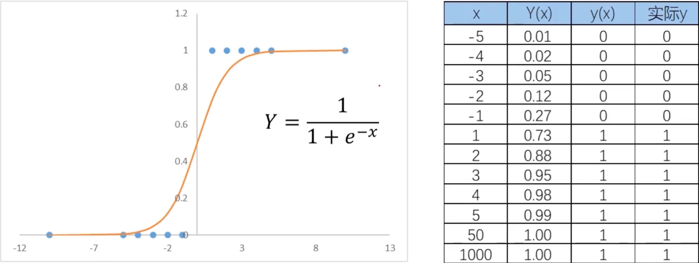
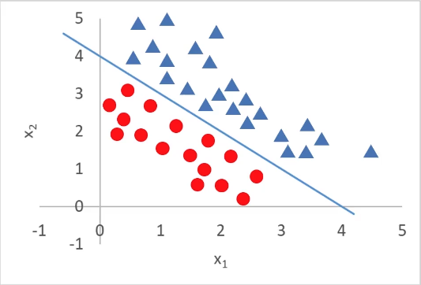

1.分类
根据已知样本的某些特征，判断一个新的样本属于哪种已知的样本类。
2.分类方法
2.1 逻辑回归
用于解决分类问题的一种模型，根据数据特征或属性，计算其归属于某一类别的概率\(P(x)\)，根据概率数值判断其所属类别。主要应用场景：二分类问题
2.1.1 模型（数学表达式）
\[Y = {1\over 1+e^{-x}} \] \[y = f(x) = \begin{cases} 1, &Y \ge0.5\\ 0, &Y \lt0.5 \end{cases} \]y为分类结果，P为概率分布函数，x为特征值。

当分类任务变得复杂，例如参数是特征值是2维，3维，则模型将变为如下：
\[Y = {1\over 1+e^{-g(x)}} \] \[g(x) = \theta_0+\theta_1x_1+\theta_2x_2 \]二阶边界函数
\[g(x) = \theta_0+\theta_1x_1+\theta_2x_2+\theta_3x_1^2+\theta_4x_2^2+\theta_5x_1x_2 \]
也就是说，需要寻找\(g(x)\)这个边界函数（决策边界）。
2.1.2 最小化损失函数
逻辑回归求解，最小化损失函数（J）:
\[J_i = \begin{cases} -log(P(x_i)), &if\ y_i = 1\\ -log(1-P(x_i)), &if\ y_i = 0 \end{cases} \]将上面的关系公式转换成下面的关系式，方便在计算机内执行：
\[J = {1\over m}\sum_{i=1}^mJ_i = -{1\over m} \begin{bmatrix} \sum_{i=1}^m(y_ilog(P(x_i))+(1-y_i)log(1-P(x_i))) \end{bmatrix} \]\(P(x)\)为上面的函数\(Y\)，\(J\)的数值越小，即模型效果越好
2.1.3 逻辑回归实战
模型训练
from sklearn.linear_model import LogisticRegression
lr_model = LogisticRegression()
lr_model.fit(x,y)
边界函数系数
theta1,theta2 = lr_model.coef_[0][0],lr_model.coef[0][1]
theta0 = lr_model.intercept_[0]
对新数据做预测
predictions = lr_model.predict(x_new)
模型评估表现
准确率（类别正确预测的比例）
\[Accuracy = {正确预测样本数量 \over 总样本数量} \]准确率越接近1越好
第一种：计算准确率
from sklearn.metrics import accuaracy_score
y_predict = lr_model.predict(X)
# y是真实的值，y_predict是预测的值
accuracy = accuracy_score(y, y_predict)
第二种：画图看决策边界效果，可视化模型表现
plt.plot(X1, X2_boundary)
passed = plt.scatter(X1[mask], X2[mask])
faild = plt.scatter(X1[~mask], X2[~mask], marker='^')
2.2 KNN近邻模型
选择一个点，然后寻找一定范围内距离其他点的距离，来判断属于那个类别。
2.3 决策树
通过询问一些问题，来最终判定属于那个类别。
2.4 神经网络
3.附录
3.1 图形展示
3.1.1 区分类别的散点图
mask = y == 1
passed = plt.scatter(X1[mask], X2[mask])
failed = plt.scatter(X1[~mask], X2[~mask], marker='^')